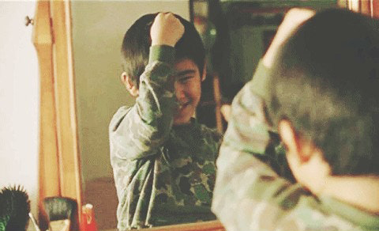
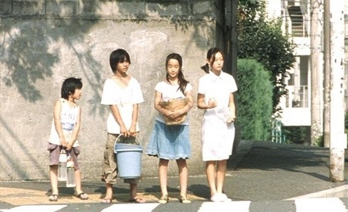

|
“엄마는 정말 우리를 버린걸까.”
부모에게 버려지고 반년 넘게 자력으로 살아간 네 남매의 실화를 모델로 한 <아무도 모른다> 작업의 핵심은 ‘아이들’이었다.
꼬박 1년 동안 감독은 계절별로 촬영과 편집을 마친 뒤에, 중간 결과물에 기초해서 다음 계절 이야기를 쓰고 찍고 하는 방식으로 진행했다.
실제 아이들의 개성과 변화를 반영해서 에피소드를 만든 것은 물론이고, 저마다 다른 테이크에서 베스트를 발휘하는 아이들을 위해
꼭 필요한 상황이 아니라면, 같은 프레임에 담지 않았다. 카메라는 철저히 아이들을 따라붙었다. |
버려진 아이들의 영화는 최루적이게 마련이지만,
<아무도 모른다>의 아이들은 울지도 않고, 칭얼대지도 않는다.
이들은 어른들이 배제된 그들만의 우주에서 밝고 활기차고 당당하게 살아간다.
더 흥미로운 건 이들을 바라보는 감독의 시선이다. 16년 전 이 소재를 영화화하기로 했을 때
감독은 주인공 소년의 1인칭 시점과 내레이션을 구상했지만,
세월이 흘러가면서 자신이 부모의 나이가 됐음을 깨닫고, 그들 곁에 서는 쪽을 택했다. “돈이 없어서 당장 찍지 못했지만, 내 안에서 이 기획이 더욱 성숙될 수 있었고, 가족 방치의 문제도 오늘날 더욱 심각한 사회 이슈가 되어, 오히려 잘된 일이라고 생각한다. 소년의 옆에서 어깨를 다독여주고자 했다. 안아주는 건 안 된다. 포옹은 너무 친밀하다. 나도 카메라도 거리를 유지할 필요가 있었다. 그와 같은 것을 바라보기 위해서라도.” 픽션의 베이스에서 다큐멘터리적으로 작업한 <아무도 모른다>는 감독의 소개에 따르면, 전작들의 종합판이자 완결편 같은 의미다. 차기작이 형식미를 강조한 시대극이라는 점으로 미뤄볼 때도, <아무도 모른다>는 고레에다 히로카즈 작품 세계 첫 챕터의 마지막 단락을 차지하는 셈이다. “그래도 나아가는 악취나는 보석들.” <아무도 모른다>에서 아이들이 집나간 엄마를 추억하는 순간은 방바닥에 들러붙은 빨간 매니큐어 흔적을 손으로 더듬거나 벽장 가득 채워진 엄마 옷의 냄새를 맡을 때다. 이들은 아마도 아폴로 초콜릿을 먹거나, 모노레일의 덜컹거리는 소음을 들을 때마다 막내를 떠올릴 것이다. 고레에다 히로카즈는 한 인터뷰에서 이런 감각에 대한 표현을 “삶의 리얼리티를 느낄 수 있는 육체적인 기억”이라고 설명한 적이 있다. 이는 머리와 입이 전하는 기억처럼, 희망이나 후회를 반영하며 왜곡되거나 변질될 염려가 없는, 진솔하고 명쾌한 기억이다. 그가 영화로 삼은 이야기들은 하나같이 실제 사건에서 영감을 얻었거나, 설정을 따왔거나, 그 여파를 따라잡고 있다. 1988년 일본 도쿄 네 남매 방치 사건을 영화화한 <아무도 모른다>도 단절과 소외라는 현대인의 질병, 그 환부를 들춰 보인다. 타인에게 무심하고 냉담해지는 오늘의 우리. 네 남매의 처참한 삶을 비추면서 가족 그리고 일본사회를 향해 질문을 던진다. 고레에다 히로카즈는 영화가 세상을 바꿀 수 있다고는 믿지 않지만, 현실을 외면해서도 안 된다고 생각한다. |


죽음을 통해 거꾸로 삶의 의미와 생의 감각을 일깨우는 작업을 해온 감독은,
거창한 대의명분과 목표에 미혹돼 삶에 대한 탐색과 질문을 그칠 때 세상이 위험해진다고 생각한다.
그는 일장기와 기미가요가 법제화되고, 자위대가 파병되는 일에 우려를 비친 적이 있다.
그런 현실감각과 주제와 감정을 강요하지 않는 겸손한 태도,
몇 시간 오락거리로 소구될 영화는 만들지 않겠다는 소신은
고레에다 히로카즈에게 사려 깊은 감독이라는 믿음을 실어주었다. |